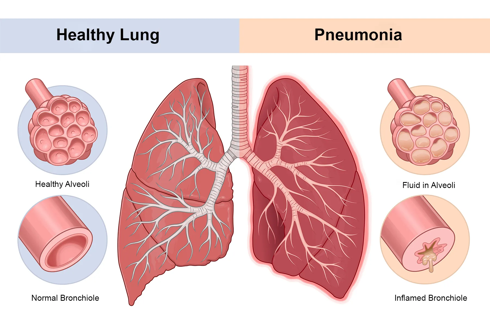
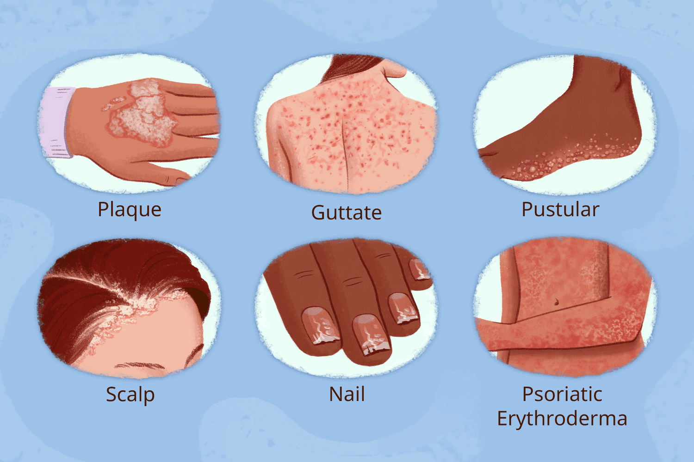
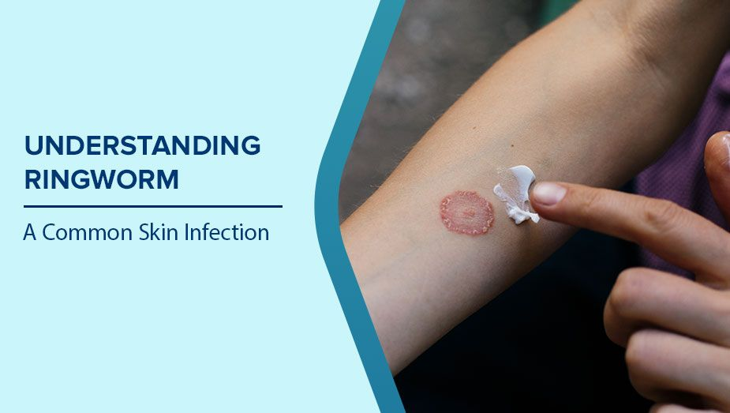
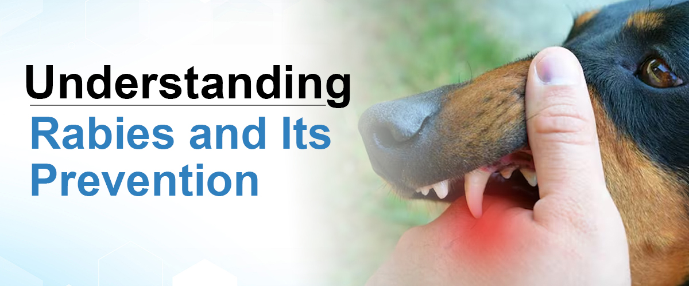
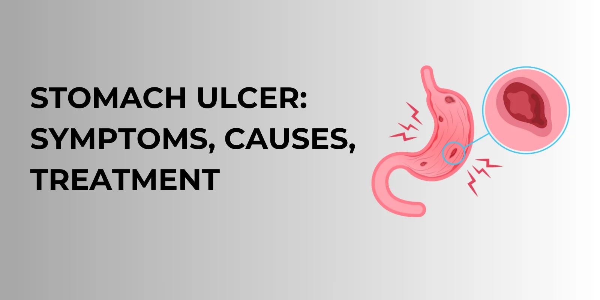

Pneumonia
- About: Infection inflaming air sacs in lungs.
- Symptoms: Cough, fever, chills, difficulty breathing.
- Do's: Take prescribed antibiotics, rest.
- Don'ts: Avoid cold/damp environments.
- Precautions: Vaccination, avoid sick people.
- Concern: Breathing issues, high fever, chest pain.

Psoriasis
- About: Autoimmune disease causing skin buildup.
- Symptoms: Red patches, scaling, itching.
- Do's: Use prescribed creams, moisturize skin.
- Don'ts: Avoid scratching and alcohol.
- Precautions: Manage stress, avoid cold exposure.
- Concern: If skin cracks, bleeds, or worsens.

Ringworm
- About: A common fungal skin infection causing red, circular, itchy rashes.
- Symptoms: Ring-shaped rash, itching, scaling, and redness.
- Do's: Keep the area clean and dry, use antifungal creams, wash clothes regularly.
- Don'ts: Don’t scratch the rash, avoid sharing towels or clothing.
- Precautions: Maintain personal hygiene, avoid contact with infected people or pets.
- Concern: If the rash spreads, becomes painful, or doesn't improve with OTC creams.

Rabies
- About: Deadly virus from animal bites (mainly dogs).
- Symptoms: Fever, fear of water, agitation.
- Do's: Immediate wound wash, get vaccinated.
- Don'ts: Avoid delay in post-exposure treatment.
- Precautions: Avoid stray dogs, vaccinate pets.
- Concern: Any animal bite or scratch.

Stomach Ulcer
- About: Sores in stomach lining due to acid damage.
- Symptoms: Burning pain, bloating, nausea.
- Do's: Take antacids, eat non-spicy foods.
- Don'ts: Avoid smoking, alcohol, and NSAIDs.
- Precautions: Avoid stress, regular meals.
- Concern: Blood in stool or vomiting.